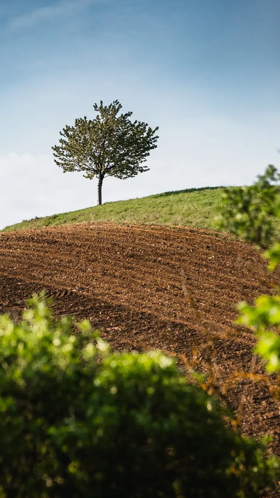
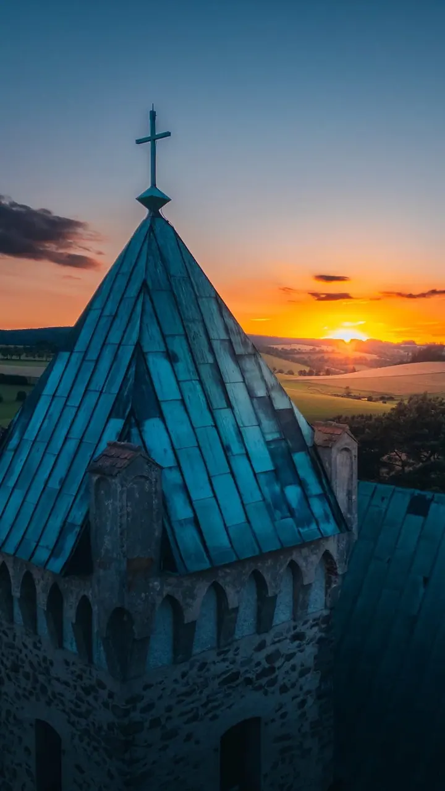

01 / 04
Firemní akce a byznys portréty
Korporátní focení, teambuilding nebo event pro vaše klienty. Vždycky najdu cestu, jak motivovat k focení a přirozeně zachytit i ty, kteří se fotí neradi.
Zeptat se na termín→




Fotograf z Vysočiny, který se dívá pozorně
Zeptat se na termín →(01) Ahoj
Jmenuji se Rosťa Havlíček a jsem kluk z Vysočiny . Fotím firemní akce, reportáže, portréty i svatby a nejradši jsem blízko tomu, co se děje. Dívám se přes padesátku a sleduji prostor z mnoha úhlů .
141příspěvků s fotkami a příběhy
(02) Co fotím
01 / 04
Korporátní focení, teambuilding nebo event pro vaše klienty. Vždycky najdu cestu, jak motivovat k focení a přirozeně zachytit i ty, kteří se fotí neradi.
Zeptat se na termín→02 / 04
Portréty fotím nejraději, protože co člověk, to jinak zajímavá tvář. Hraju si se světlem a stíny, které se v každém prostředí během roku mění.
Zeptat se na termín→03 / 04
Fotkami vyprávím příběh celé události, ať je to cesta, konference nebo festival. Den za dnem, protože obrazy řeknou víc než slova.
Zeptat se na termín→Dále nabízím
Fotky jsou hmatatelná vzpomínka pro vás, vaše děti i další generace. Fotím tak, abyste se přitom cítili dobře a přirozeně.
↗(03) Portfolio
Kliknutím fotku zvětšíte · fotografie jsou ilustrační
(04) Postup
Od první zprávy po hotovou galerii.
Krok 1 z 4
Sejdeme se osobně nebo na video callu a domluvíme si termín a podmínky focení.
Krok 2 z 4
Stanovím cenu focení i samotných fotografií podle času, který spolu strávíme. Dobré účty dělají dobré přátele.
Krok 3 z 4
Po focení vám pošlu tři ukázkové fotky, abychom si spolu odsouhlasili tónování i celkový vzhled.
Krok 4 z 4
Vybrané fotky pečlivě upravím a do 1 týdne vám je pošlu v elektronické podobě ve formátech, na kterých se domluvíme.
Obrazy řeknou víc než slova.

(05) Za objektivem
Pracovní zkušenosti jsem sbíral v Praze a v Ostravě, nakonec jsem se ale vrátil domů do Nového Města na Moravě. Fotit jsem začal díky práci v Gamin s.r.o., kde jsem absolvoval kurz focení a sám byl překvapený, jak moc mě to chytlo.
A tak jsem fotil. Hodně. Rok, dva, a nadšení mě nepustilo. S focením máme zřejmě vážný vztah, který se s každou další fotkou utužuje. Pořád můžu růst a posouvat své hranice, a to mi na tom přijde úžasné.
Při práci se dívám pozorně, nejčastěji přes objektiv 50 mm, a hledám emoce a detaily, kterých si běžně nevšímáme. Fotím na Sony Alpha A7 III a fotky ladím v Lightroomu a Photoshopu. Co vám slíbím, splním. Dodržuji termíny i cenu, na které se domluvíme.
Rostislav
Rostislav Havlíček · Fotograf firemních akcí a portrétů
Půl den focení vychází na 7 000 Kč, celý den na 12 000 Kč. Cestovné počítám zvlášť podle skutečné vzdálenosti.
Rodinné focení stojí 1 500 Kč za hodinu včetně dopravy do 20 minut autem. Portréty s pokročilou úpravou a náročnější retuší stojí 1 800 Kč za hodinu.
Upravené fotky vám pošlu v elektronické podobě do 1 týdne. Před tím si spolu odsouhlasíme tónování na náhledu tří fotek.
To je v pořádku, potkávám to často. Vždycky najdu cestu, jak vás k focení motivovat a zachytit vás přirozeně.
(07) Kontakt
Napište pár vět o tom, co si představujete, a termín, který se vám hodí.
havlicek.rosta@gmail.com